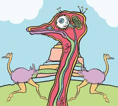
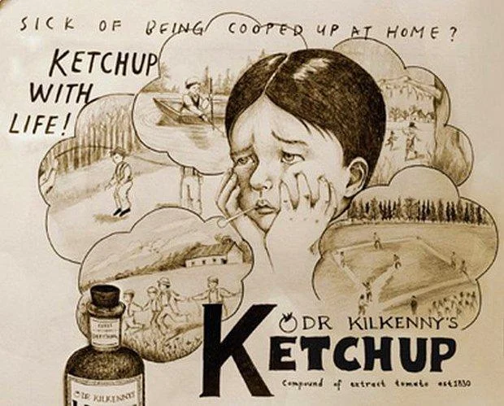

Publicado em 01/08/2025
A Islândia cresce 5 cm por ano devido ao movimento das placas tectônicas
Publicado em 05/08/2025
O olho do avestruz é maior que o cérebro dele — e ainda assim ele sobrevive muito bem
Publicado em 07/12/2025
O ketchup já foi vendido como remédio no século XIX
Luiz criou este site para reunir curiosidades fascinantes sobre o mundo, despertar a imaginação e alimentar a curiosidade de quem adora aprender algo novo todos os dias.
Nome: Jao plug
Comentario: Este site é um verdadeiro convite à descoberta! Criado por Luiz, ele reúne curiosidades fascinantes sobre o mundo, misturando informação, surpresa e diversão em cada página. Ideal para quem tem sede de conhecimento e adora aprender algo novo todos os dias.
conecte-se comigo nas redes sociais:
Meu instagramContato: luiz@gmail.com